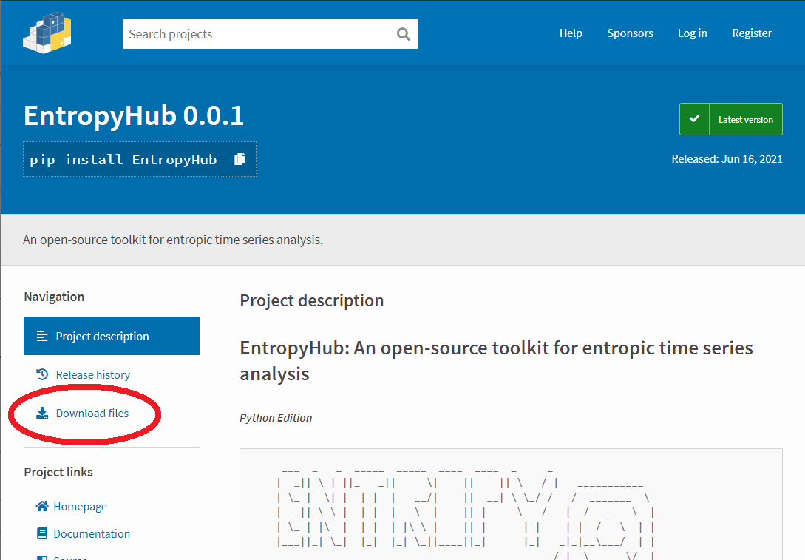
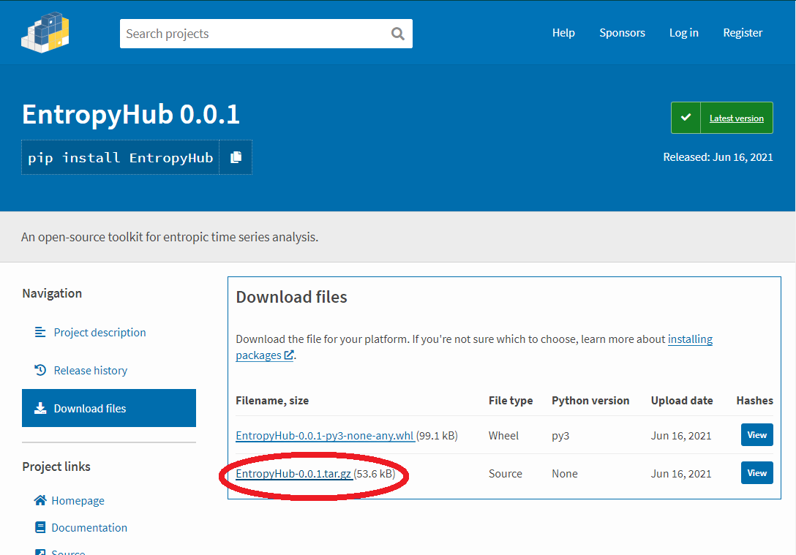

EntropyHub: Python
Links to installation files: GitHub || PyPi
Requirements & Installation:
- There are several package dependencies which will be installed alongside EntropyHub (if not already installed):
Numpy
Scipy
Matplotlib
PyEMD
Requests
EntropyHub was designed using Python3 and thus is not intended for use with Python2. Python versions > 3.6 are required for using EntropyHub.
There are 2 ways to install EntropyHub for Python. Method 1 is strongly recommended.
Method 1:
Using
pipin your python IDE, type:pip install EntropyHub
Method 2:
Download the
 EntropyHub.x.x.x.tar.gzfolder from the EntropyHub PyPI repo (or the EntropyHub GitHub repo) and unzip it.Open a command terminal (cmd on Windows, terminal on Mac) or use the Anaconda prompt if you use Anaconda as your python package distribution.
In the command prompt/terminal, navigate to the directory where you saved and extracted the
.tar.gzfolder.Enter the following in the command line:
python setup.py install
{kind=link}
{kind=link}
Ensure that an up-to-date version of setuptools is installed:
python -m pip install --upgrade setuptools
To use EntropyHub, import the module with the following command,
import EntropyHub
or in abbreviated form,
import EntropyHub as EH
To check that EntropyHub has imported correctly, type:
EntropyHub.greet() ___ _ _ _____ _____ ____ ____ _ _ | _|| \ | ||_ _|| \| || || \ / | ___________ | \_ | \| | | | | __/| || __| \ \_/ / / _______ \ | _|| \ \ | | | | \ | || | \ / | / ___ \ | | \_ | |\ | | | | |\ \ | || | | | | | / \ | | |___||_| \_| |_| |_| \_||____||_| |_| _|_|__\___/ | | _ _ _ _ ____ / |__\______\/ | | | | || | | || \ An open-source | /\______\__|_/ | |_| || | | || | toolkit for | | / \ | | | _ || | | || \ entropic time- | | \___/ | | | | | || |_| || \ series analysis | \_______/ | |_| |_|\_____/|_____/ \___________/
Documentation & Help:
A key advantage of EntropyHub is the comprehensive documentation available to help users to make the most of the toolkit.
One can simply access the docstrings of a function (like any Python function) by typing help FunctionName, e.g. help SampEn in the command line which will print the docstrings.
All information on the EntropyHub package is detailed in the EntropyHub Guide,
a .pdf document available to download here.
The Python API subsections outline the syntax for each base, cross-, multiscale, multiscale-cross, and bidimensional entropy Python function.